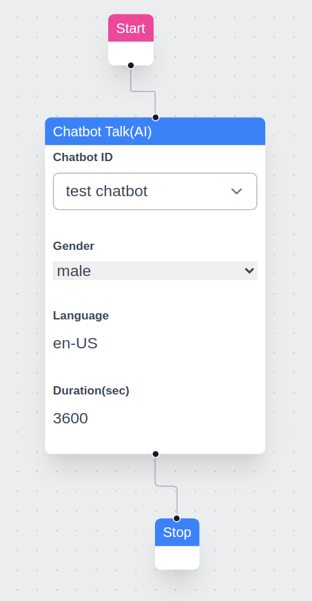
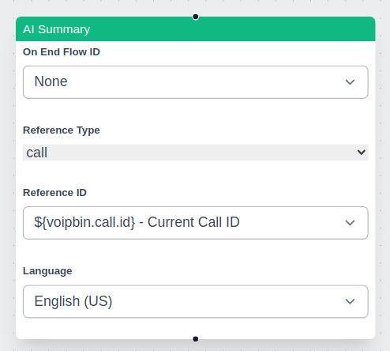

Overview
Note
AI Context
Complexity: High
Cost: Chargeable (credit deduction per AI session based on LLM, TTS, and STT usage)
Async: Yes. AI sessions run asynchronously during calls. Monitor via
GET /calls/{id}or WebSocket events.
VoIPBIN’s AI is a built-in AI agent that enables automated, intelligent voice interactions during live calls. The AI integrates with multiple LLM providers (OpenAI, Anthropic, Gemini, and 15+ others), real-time speech processing, and tool functions to create dynamic, interactive voice experiences.
Note
AI Implementation Hint
AI is configured in two layers: (1) a reusable AI configuration resource created via POST /ais (defines LLM, TTS, STT, and tools), and (2) a flow action (ai_talk or ai) that references the AI configuration or provides inline settings. For quick prototyping, use inline flow actions. For production, create a reusable AI resource and reference it by ai_id.
How it works
Architecture Overview
VoIPBIN’s AI system consists of two main components working together: the AI Manager (Go) for orchestration and the Pipecat Manager (Python) for real-time audio processing.
+-----------------------------------------------------------------------+
| VoIPBIN AI Architecture |
+-----------------------------------------------------------------------+
+-------------------+
| Flow Manager |
| (ai_talk action) |
+--------+----------+
|
| Start AI session
v
+-------------------+ +-------------------+ +-------------------+
| | | | | |
| Asterisk |<------>| AI Manager |<------>| Pipecat Manager |
| (8kHz audio) | HTTP | (Go) | RMQ/WS | (Python) |
| | | | | |
+-------------------+ +--------+----------+ +--------+----------+
^ | |
| | |
| RTP audio | Tool | Real-time
| | execution | processing
v v v
+-------------------+ +-------------------+ +-------------------+
| User | | call-manager | | STT / LLM |
| (Phone) | | message-manager | | / TTS |
| | | email-manager | | Providers |
+-------------------+ +-------------------+ +-------------------+
Audio Flow
Audio flows through the system with sample rate conversion between components:
+-----------------------------------------------------------------------+
| Audio Flow |
+-----------------------------------------------------------------------+
User (Phone) VoIPBIN AI Providers
| | |
| RTP (8kHz PCM) | |
+------------------------------>| |
| | |
| +----------------+----------------+ |
| | | |
| v v |
| +---------------+ +------------------+ |
| | Asterisk | | Pipecat | |
| | (8kHz) |<------------>| (16kHz) | |
| +---------------+ WebSocket +------------------+ |
| | audio stream | |
| | v |
| | +------------------+ |
| | | Sample Rate | |
| | | Conversion | |
| | | 8kHz <-> 16kHz | |
| | +--------+---------+ |
| | | |
| | v |
| | +------------------+ |
| | | STT |--->|
| | | (Deepgram) | |
| | +------------------+ |
| | | |
| | | Text |
| | v |
| | +------------------+ |
| | | LLM |--->|
| | | (OpenAI/etc) | |
| | +------------------+ |
| | | |
| | | Response |
| | v |
| | +------------------+ |
| |<-------------------| TTS |<---|
| | Audio response | (ElevenLabs) | |
| | +------------------+ |
| | |
|<-------------+ |
| RTP audio playback |
| |
AI Call Lifecycle
An AI call goes through several stages from initialization to termination:
+-----------------------------------------------------------------------+
| AI Call Lifecycle |
+-----------------------------------------------------------------------+
1. INITIALIZATION
+-------------------+ +-------------------+
| Flow Manager |------->| AI Manager |
| (ai_talk) | | Start AIcall |
+-------------------+ +--------+----------+
|
v
+-------------------+ +-------------------+
| Pipecat |<-------| Creates session |
| Initializing | | in database |
+-------------------+ +-------------------+
2. PROCESSING (Real-time conversation)
+-------------------+ +-------------------+
| User |<------>| Pipecat |
| speaks/listens | | STT->LLM->TTS |
+-------------------+ +-------------------+
^ |
| v
| +-------------------+
| | Tool Execution |
| | (if triggered) |
| +-------------------+
| |
+----------------------------+
3. TERMINATION
+-------------------+ +-------------------+
| stop_service |------->| AI Manager |
| or hangup | | Terminate |
+-------------------+ +--------+----------+
|
v
+-------------------+
| Cleanup session |
| Save messages |
+-------------------+
Action Component
The AI is integrated as a configurable action within VoIPBIN flows. When a call reaches an AI action, the system triggers the AI to generate responses based on the provided prompt.
TTS/STT + AI Engine
VoIPBIN’s AI uses Speech-to-Text (STT) to convert spoken words into text, processes through the LLM, and Text-to-Speech (TTS) converts responses back to audio. This happens in real-time for seamless conversations.

Voice Detection and Play Interruption
VoIPBIN incorporates voice detection for natural conversational flow. While the AI is speaking (TTS playback), if the system detects the user’s voice, it immediately stops TTS and routes the user’s speech to STT and then to the LLM. This ensures user input is prioritized, enabling dynamic interaction that resembles real conversation.
+-----------------------------------------------------------------------+
| Voice Interruption Flow |
+-----------------------------------------------------------------------+
AI Speaking User Interrupts AI Listens
| | |
+---------v---------+ | |
| TTS audio plays | | |
| "I can help you | | |
| with that..." | | |
+-------------------+ | |
| | |
| <---- Voice detected ---->| |
| | |
+---------v---------+ | |
| STOP TTS | | |
| immediately | | |
+-------------------+ | |
| | |
+--------------------------->| |
| |
+--------v--------+ |
| User speaks: | |
| "Actually, I | |
| need help with | |
| something else"| |
+--------+--------+ |
| |
| STT -> LLM |
| |
+------------------------->|
+-------v-------+
| AI processes |
| new request |
+---------------+
Context Retention
VoIPBIN’s AI supports context saving. During a conversation, the AI remembers prior exchanges, allowing it to maintain continuity and respond based on earlier parts of the interaction. This provides a more natural and human-like dialogue experience.
Multilingual Support
VoIPBIN’s AI supports multiple languages. See supported languages: supported languages.
Tool Functions
AI tool functions enable the AI to take actions during conversations, such as transferring calls, sending messages, or managing the conversation flow.
Tool Execution Architecture
+-----------------------------------------------------------------------+
| Tool Execution Flow |
+-----------------------------------------------------------------------+
Step 1: User makes request
+-------------------+
| "Transfer me to |
| sales please" |
+--------+----------+
|
v
Step 2: Speech-to-Text
+-------------------+
| STT converts |
| audio to text |
+--------+----------+
|
v
Step 3: LLM Processing
+-------------------+
| LLM detects intent|
| Generates: |
| function_call: |
| connect_call |
+--------+----------+
|
v
Step 4: Tool Execution
+-------------------+ +-------------------+
| Python Pipecat |------->| Go AIcallHandler|
| sends HTTP POST | | ToolHandle() |
+-------------------+ +--------+----------+
|
v
+-------------------+
| Execute via |
| call-manager |
+--------+----------+
|
v
Step 5: Result returned
+-------------------+ +-------------------+
| Pipecat receives |<-------| Tool result |
| success/failure | | returned |
+--------+----------+ +-------------------+
|
v
Step 6: AI Response
+-------------------+
| LLM generates |
| "Connecting you |
| to sales now..." |
+--------+----------+
|
v
Step 7: TTS Playback
+-------------------+
| TTS converts to |
| audio, plays to |
| user |
+-------------------+
Available Tools
Tool |
Description |
|---|---|
connect_call |
Transfer or connect to another endpoint |
send_email |
Send an email message |
send_message |
Send an SMS text message |
stop_media |
Stop currently playing media |
stop_service |
End AI conversation (soft stop, flow continues) |
stop_flow |
Terminate entire flow (hard stop, call ends) |
set_variables |
Save data to flow context |
get_variables |
Retrieve data from flow context |
get_aicall_messages |
Get message history from an AI call |
For detailed documentation on each tool, see Tool Functions.
Configuring Tools
Tools are configured per-AI using the tool_names field (Array of String):
// Enable all tools
"tool_names": ["all"]
// Enable specific tools only
"tool_names": ["connect_call", "send_email", "stop_service"]
// Disable all tools (conversation-only)
"tool_names": []
Note
AI Implementation Hint
When using ["all"], the AI can invoke any available tool, including stop_flow which terminates the entire call. For customer-facing deployments, prefer listing specific tools explicitly to prevent unintended call terminations.
Using the AI
Initial Prompt
The initial prompt serves as the foundation for the AI’s behavior. A well-crafted prompt ensures accurate and relevant responses. There is no enforced limit to prompt length, but we recommend keeping this confidential to ensure consistent performance and security.
Example Prompt:
Pretend you are an expert customer service agent.
Please respond kindly.
AI Talk
AI Talk enables real-time conversational AI with voice in VoIPBIN, powered by high-quality TTS engines (ElevenLabs, Deepgram, OpenAI, etc.) for natural-sounding speech.

Key Features
Real-time Voice Interaction: AI generates responses in real-time based on user input and delivers them as speech.
Interruption Detection & Listening: If the user speaks while the AI is talking, the system immediately stops the AI’s speech and captures the user’s voice via STT. This ensures smooth, continuous conversation flow.
Low Latency Response: For longer prompts, AI Talk generates and plays speech in smaller chunks, reducing perceived response time for the user.
Multiple TTS/STT Providers: Support for ElevenLabs, Deepgram, OpenAI, and many other providers.
Tool Function Integration: AI can perform actions like call transfers, sending messages, and managing variables during conversation.
Built-in ElevenLabs Voice IDs
VoIPBIN uses a predefined set of voice IDs for various languages and genders. Here are the default ElevenLabs Voice IDs currently in use:
Language |
Male Voice ID (Name) |
Female Voice ID (Name) |
Neutral Voice ID (Name) |
|---|---|---|---|
English (Default) |
|
|
|
Japanese |
|
|
|
Chinese |
|
|
|
German |
|
|
|
French |
|
|
|
Hindi |
|
|
|
Korean |
|
|
|
Italian |
|
|
|
Spanish (Spain) |
|
|
|
Portuguese (Brazil) |
|
|
|
Dutch |
|
|
|
Russian |
|
|
|
Arabic |
|
|
|
Polish |
|
|
|
Other ElevenLabs Voice ID Options
VoIPBIN allows you to personalize the text-to-speech output by specifying a custom ElevenLabs Voice ID. By setting the voipbin.tts.elevenlabs.voice_id variable, you can override the default voice selection.
voipbin.tts.elevenlabs.voice_id: <Your Custom Voice ID>
See how to set the variables here.
AI Summary
The AI Summary feature in VoIPBIN generates structured summaries of call transcriptions, recordings, or conference discussions. It provides a concise summary of key points, decisions, and action items based on the provided transcription source.
Supported Resources
AI summaries work with a single resource at a time. The supported resources are:
Real-time Summary: * Live call transcription * Live conference transcription
Non-Real-time Summary: * Transcribed recordings (post-call) * Recorded conferences (post-call)
Choosing Between Real-time and Non-Real-time Summaries
Developers must decide whether to use a real-time or non-real-time summary based on their needs:
Use Case |
Summary Type |
Recommendation |
|---|---|---|
Live call monitoring |
Real-time |
Use AI summary with a live call transcription |
Live conference insights |
Real-time |
Use AI summary with a live conference transcription |
Post-call analysis |
Non-real-time |
Use AI summary with transcribe_id from a completed call |
Recorded conference summary |
Non-real-time |
Use AI summary with recording_id |
AI Summary Behavior
The summary action processes only one resource at a time.
If multiple AI summary actions are used in a flow, each executes independently.
If an AI summary action is triggered multiple times for the same resource, it only returns the most recent segment.
In conference calls, the summary is unified across all participants rather than per speaker.
Ensuring Full Coverage
Since starting an AI summary action late in the call results in missing earlier conversations, developers should follow best practices: * Enable transcribe_start early: This ensures that transcriptions are available even if an AI summary action is triggered later. * Use transcribe_id instead of call_id: This allows summarizing a full transcription rather than just the latest segment. * For post-call summaries, use recording_id: This ensures that the full conversation is summarized from the recorded audio.
External AI Agent Integration
For users who prefer to use external AI services, VoIPBIN offers media stream access. This allows third-party AI engines to process voice data directly, enabling deeper customization and advanced AI capabilities.
MCP Server
A recommended open-source implementation is available here:
Common Scenarios
Scenario 1: Customer Service Agent
AI handles routine customer inquiries with tool actions.
Caller: "I want to check my order status"
|
v
+---------------------------+
| AI: "I'd be happy to help.|
| What's your order number?"|
+---------------------------+
|
v
Caller: "Order 12345"
|
v
+---------------------------+
| AI triggers tool: |
| get_variables(order_id) |
| -> Retrieves order data |
+---------------------------+
|
v
+---------------------------+
| AI: "Your order shipped |
| yesterday and will arrive |
| by Friday." |
+---------------------------+
Scenario 2: Appointment Scheduling
AI collects information and transfers to agent.
+------------------------------------------------+
| AI Interaction |
+------------------------------------------------+
| |
| AI: "Welcome! How can I help you today?" |
| |
| Caller: "I need to schedule an appointment" |
| |
| AI: "What day works best for you?" |
| |
| Caller: "Next Tuesday afternoon" |
| |
| AI: "Let me transfer you to our scheduling |
| team with this information." |
| |
| [Tool: set_variables(preferred_date, time)] |
| [Tool: connect_call(scheduling_queue)] |
| |
+------------------------------------------------+
Scenario 3: Interactive Voice Survey
AI collects survey responses with natural conversation.
AI Flow:
1. Greeting + consent
"This is a brief satisfaction survey. May I continue?"
2. Question 1 (scale)
"On a scale of 1-10, how satisfied are you?"
[Tool: set_variables(q1_score)]
3. Question 2 (open-ended)
"What could we improve?"
[Tool: set_variables(q2_feedback)]
4. Thank you + end
"Thank you for your feedback!"
[Tool: stop_service]
Best Practices
1. Prompt Design
Keep prompts clear and focused on specific tasks
Include examples of expected responses
Define the AI’s persona and tone
Specify what tools the AI should use and when
2. Tool Configuration
Enable only tools the AI needs for its task
Use
["all"]cautiously - prefer specific tool listsTest tool interactions thoroughly before deployment
Handle tool failures gracefully in prompts
3. Conversation Flow
Set appropriate timeouts for user responses
Use voice detection settings that match your use case
Enable context retention for multi-turn conversations
Plan exit paths (transfer, end call, escalation)
4. Audio Quality
Choose TTS voices appropriate for your language/region
Test audio quality across different phone networks
Consider latency when selecting STT/TTS providers
Use 16kHz providers for better quality when possible
Troubleshooting
Note
AI Implementation Hint
When diagnosing AI call issues, check these endpoints in order: (1) GET /calls/{id} to verify call status and hangup reason, (2) GET /activeflows/{id} to check flow execution state, (3) WebSocket events for real-time error notifications.
Common HTTP Errors
- 400 Bad Request:
Cause: Invalid
engine_modelformat. Must be<provider>.<model>(e.g.,openai.gpt-4o).Fix: Verify the format matches the provider table in Engine Models.
- 402 Payment Required:
Cause: Insufficient account balance for AI session (LLM + TTS + STT costs).
Fix: Check balance via
GET /billing-accounts. Top up before retrying.
- 404 Not Found:
Cause: The
ai_iddoes not exist or belongs to a different customer.Fix: Verify the UUID was obtained from
GET /aisorPOST /ais.
- 500 Internal Server Error:
Cause: LLM provider API key is invalid or the provider is unavailable.
Fix: Verify
engine_keyis correct. Check the provider’s status page.
Audio Issues
Symptom |
Solution |
|---|---|
No audio from AI |
Check Pipecat connection; verify TTS provider credentials; check audio routing |
Choppy or delayed audio |
Check network latency; try different TTS provider; verify sample rate conversion |
User not heard |
Check STT configuration; verify microphone audio is reaching the system |
AI Response Issues
Symptom |
Solution |
|---|---|
AI gives wrong answers |
Review and refine prompt; add examples; check context length limits |
AI doesn’t use tools |
Verify tool_names configuration; check tool descriptions in prompt; review LLM response |
Tool execution fails |
Check tool handler logs; verify target service (call-manager, etc.) is available |
Connection Issues
Symptom |
Solution |
|---|---|
AI session won’t start |
Check AI Manager connectivity; verify Pipecat is running; check database connection |
Session drops unexpectedly |
Check timeout settings; review AI Manager logs for errors; verify WebSocket stability |